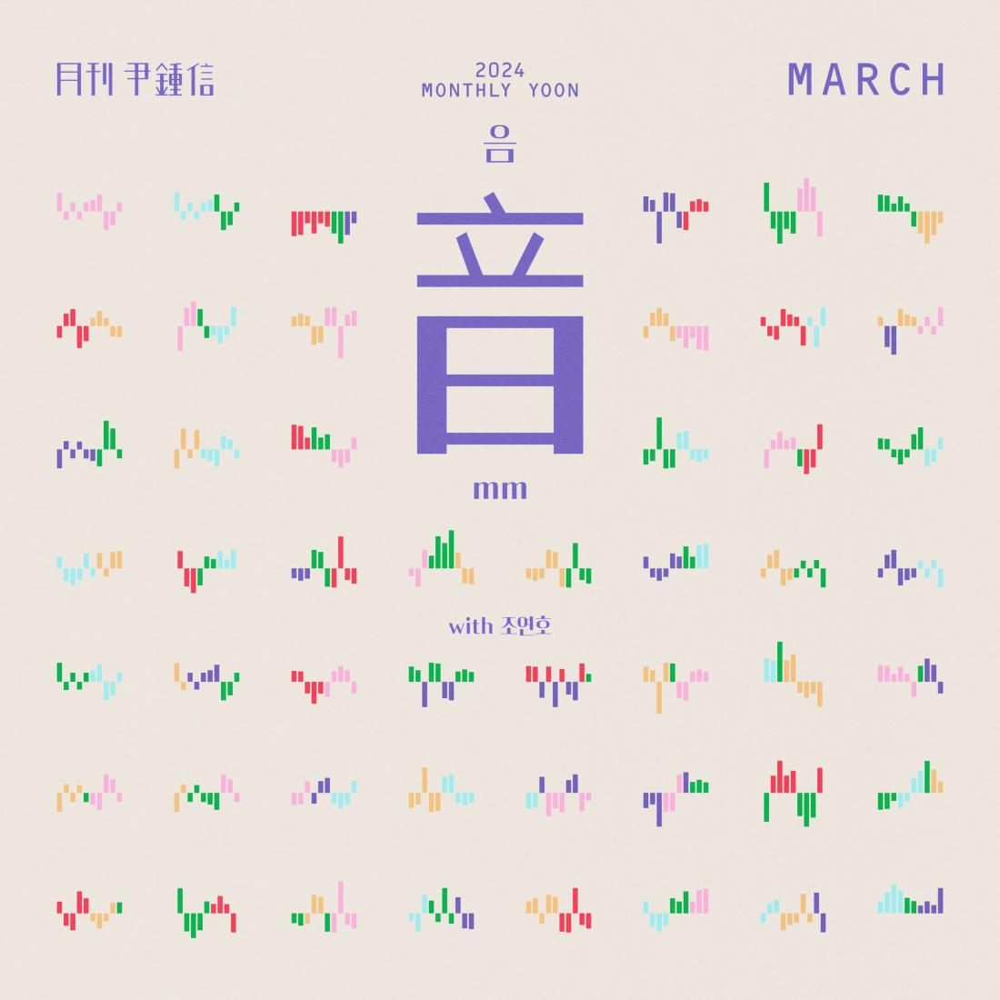

안녕하세요 라보엠입니다.
매달 싱글 앨범을 발표하는 월간 윤종신 프로젝트는 2010년 4월 이후 10여년이 지난 지금까지도 이어지고 있습니다. 싱어송라이터인 윤종신은 직접 노래부르기도 하지만, 많은 가수들과 협업을 하기도 하고, 후배 가수들의 등용문의 장으로 월간 윤종신 프로젝트를 쓰기도 합니다. 이번 2024년 3월호에는 이전에도 참여했었던 미스틱의 가수 조연호가 참여하여 윤종신의 노래를 불렀습니다.
월간 윤종신 2024년 3월호 음(mm) with 조연호 MV
월간 윤종신 2024년 3월호 음(mm) 소개
2024 [월간 윤종신] 3월호 ‘음(mm)’은 사랑의 시작과 함께 일상으로 찾아온 리듬을 표현한 곡이다. 그저 떠올리기만 해도 저절로 콧노래가 나오는 기분과 알 것 같은 마음과 모르겠는 마음이 교차하는 설렘의 감정을 담았다. 새 학기가 시작되는 3월, 새로운 만남 속에서 오고 가는 오묘한 감정과 재편되는 관계들 속에서 싹트는 변화의 조짐들. 윤종신의 대표 발라드곡을 여럿 탄생시킨 바 있는 윤종신-이근호 콤비가 다시 한번 의기투합했으며, 미스틱스토리 소속의 발라더 조연호가 가창자로 참여했다.
“저는 음악을 하는 사람이어서 그런지, 누군가의 설렘에서 리듬을 감지하곤 하는데요. 사랑에 빠지면 우리는 자기도 모르게 리듬을 타거든요. 콧노래가 나오는 건 물론이고 말소리나 생활의 태도에도 운율이 생기죠. 생각해 보면 기분이 안 좋을 때 콧노래나 허밍을 하는 사람은 없거든요. 뭔가 일이 뜻대로 되지 않으면 우리 안에서는 리듬이 사라지죠. 이제 막 리듬이 생긴 사람, 가만히 있어도 음이 막 떠오르는 그런 사람의 기분을 그려보고 싶었고, 제가 2, 30대 때 많이 썼던 설렘의 순간을 재현해보고자 했습니다. 새로운 시작과 달뜬 마음으로 가득한 봄 특유의 분위기를 이 노래를 통해서도 즐겨주시길.”
윤종신은 요즘 차세대 발라더 프로듀싱에 다시 한번 시동을 걸고 있다. 한동안 미스틱스토리 소속 가수의 앨범 프로듀싱에서 한 발짝 떨어져 있었던 그는 3월호 ‘음(mm)’을 통해 조연호를 본격적으로 세상에 선포하고 싶다고 이야기한다. 조연호와 함께 준비 중인 앨범은 조연호의 목소리에서 느껴지는 특유의 순수함을 극대화하는 방향으로 전개될 예정이며, 먼저 [월간 윤종신]을 발판 삼아 여러 방향의 시도를 해볼 예정이라고. 2023년 5월호 ’대인관계’에 이어 [월간 윤종신]에 두 번째로 참여하게 된 조연호는 이렇게 작업 소감을 전해왔다.
“보통 인트로를 듣고 첫 멜로디를 어느 정도 예상하곤 하는데, ‘음(mm)’은 저의 예상을 완벽하게 빗나가는 전개였어요. 들으면 들을수록 도전해보고 싶은 마음이 커졌고요. 무엇보다도 화자의 캐릭터가 중요하다는 생각이 들어서 연구를 해갔는데, 역시나 아직 부족하더라고요. 제가 방황하니까 쌤께서 “좀 더 멋을 부려봐. 더 건방져도 돼!“라고 디렉션을 주셨는데, 냅다 뒷짐 지고 짝다리 짚고 불렀더니 바로 오케이가 났습니다. 이번에도 새로운 느낌의 보컬을 만나보실 수 있지 않을까 싶어요.”
[3월호 이야기] “여전히 누군가에게 빠져드는 이야기를 만드는 건 설레는 작업.”
월간 윤종신 2024년 3월호 음(mm) 가사
널 볼 때면 내게 일어나는 작은 변화
어느새 난 음들을 흥얼거리는 걸
리드믹 하게 떨리는 맘
나즈막하게 바라는 말
너에게 한걸음 다가가고픈 mmmmm
사랑이라 말하기에는 아직은 일방적인 것
미뤄두었던 내 고백의 그 순간이
얼마 남지 않은 걸 내 심장의 리듬은
다른 곳을 바라볼 때도
너의 형체를 신경 쓰던
속일 수 없이 터질 것 같았던 mmmmm
사랑이 아니라고 하기엔 아무 반박할 수 없는
몰라 널 어떻게 해야 할지 난 몰라
달라 넌 내가 대했던 사람들과
수없이 썼다 지웠다 반복했던 말들 속에
답이 있겠지 그걸 몰라
알아 넌 내 맘속을 떠나지 않아
불러 너 떠오르던 그 노래들을
그 한 음 한 음 속에 너를 꾹꾹 담아 넣으면
mm 더 보고 싶어져
넌 사랑을 많이 해봤니
그냥 그랬으면 더 좋을 것 같아서
그럼 더 잘 알 것 같아서 나만큼 널 사랑한
이렇게 미련토록 끙끙 앓는 날
몰라 널 어떻게 해야 할지 난 몰라
달라 넌 내가 겪었던 사람들과
수없이 썼다 지웠다 반복했던 말들 속에
답이 있을까 이젠 몰라
알아 넌 내 맘속을 떠나지 못해
불러 너 떠오르던 그 노래들을
그 한 음 한 음 속에 너를 꾹꾹 담아 넣으면
mm 더 보고 싶어져
mm 더 보고 싶어져

3월호 '음(mm)'(with 조연호)
월간 윤종신 편집팀입니다
yoonjongshin.com